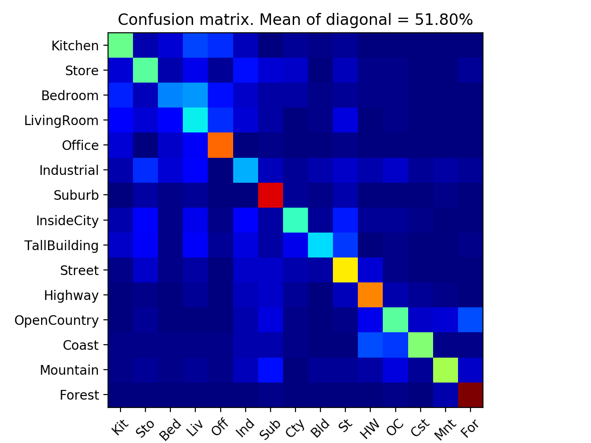

This project involves the recognition and categorization of a particular scene from a given dataset of images. We start by taking tiny images as image features and then use the nearest neighbor classifier to classify the images. The tiny image features are obtained by down sampling the image to a fixed resolution which we have chosen as 16X16 for this project. In simple words, the nearest neighbor classifier classifies a test feature into a specific category by assigning it the label of the nearest training example. The second part of this project deals with taking SIFT features of the images and then classifying using a linear support vector machine. In short, the project can be divided into the following parts:
Tiny image features can be obtained from an image by resizing/downsampling the image to a lower resolution. For this project, the images have been resized to 16X16 to create the image feature. To get an image feature from the resized image, the 16X16 matrix is converted to a 256-dimensional feature vector. The accuracy of the classifier using the tiny image features can be increased slightly by normalizing the features to have a zero mean and unit length. The tiny image features is a very simple way to represent an image, but due to the resizing of the image, the high-frequency image content is discarded. Moreover, the features are not especially invariant to spatial or brightness shifts.
The SIFT features used are similar to the ones used in local feature matching. Initially, to build our vocabulary, we choose a higher step size and stack the 128-dimensional features from each of the images on top of one another and using k-means clustering we cluster the given data into predefined number of clusters. In the bag of SIFT function, we choose a considerably lower step size to ensure that almost all the image features are accounted for. For each image, we compute the 128-dimensional SIFT feature vectors and assign them to one of the clusters by finding the nearest neighbor k-means centroid for every SIFT feature. We then count the number of SIFT descriptors that fall into each cluster in our visual word vocabulary, thereby creating a histogram of the data.
The nearest neighbor classifier achieves consistently high performance without a priori assumption about the distribution from which the training examples are drawn. In this project, we use the nearest neighbor classifier to classify a test feature into a particular category by finding its nearest training example. To find the nearest training example we use the L2 norm to compute the distance. For the first part of this project, we use the nearest neighbor classifier along with the tiny image features to get started. Since the tiny image features discard the high-frequency components of the image, it is not a good feature representation of the image. As a result of this, the accuracy obtained while coupling the nearest neighbor classifier with the tiny image features is a bit low. To improve this accuracy, we use 128-dimensional SIFT feature vectors coupled with the nearest neighbor classifier.
For the final part of this project we couple the linear support vector machine classifier with the bag of SIFT feature space to get a high accuracy of scene recognition. We train a one vs. all linear SVM to operate in the bag of SIFT feature space. The 1500 training images and their labels are used to create 15 hyperplanes which partition the feature space and the test cases are categorized based on which side of the hyperplane they fall on. Since we have 15 categories and linear classifiers are inherently binary we train 15 one vs. all linear classifiers by converting the labels to binary for each of the categories. Once we have our 15 hyperplanes, we take each of the test images and evaluate them on the each of the 15 classifiers. Finally, the test images are labeled according to the classifier which returns the highest score.
One of the most important aspects of machine learning is the estimate of good hyper-parameters. For this project cross-validation and validation have been performed to get a good estimate of the hyper-parameters. Also, the notebook has been run on different vocabulary sizes, and results have been reported.
To get good hyper-parameters for the linear SVM, the 1500 training images were divided into a group of 1400 images which formed the new training set and remaining 100 images formed the new test set. The hyperplanes were computed using the new training images and were tested on the 100 test images. This process was repeated 15 times, each time randomly dividing the training set into a set of 1400 and 100 images. This was also repeated for varied values of C to get the best hyper parameter. From the experiments, it was learned that for large values of C, the optimization would choose a smaller margin hyperplane if that hyperplane does a better job of getting all the training points classified correctly. Conversely, a very small value of C will cause the optimizer to look for a larger margin separating hyperplane, even if that hyperplane misclassifies more points.
The notebook was run using different vocabulary sizes, and the performance has been elaborated in the table below.
| Vocabulary Size = 50 |
|---|
| SIFT Features Coupled With Linear SVM Classifier SIFT Features Coupled With Nearest Neighbour Classifier |
|
|
| Vocabulary Size = 100 |
| SIFT Features Coupled With Linear SVM Classifier SIFT Features Coupled With Nearest Neighbour Classifier |
|
|
| Vocabulary Size = 200 |
| SIFT Features Coupled With Linear SVM Classifier SIFT Features Coupled With Nearest Neighbour Classifier |
|
|
| Vocabulary Size = 400 |
| SIFT Features Coupled With Linear SVM Classifier SIFT Features Coupled With Nearest Neighbour Classifier |
|
|
| Vocabulary Size = 1000 |
| SIFT Features Coupled With Linear SVM Classifier SIFT Features Coupled With Nearest Neighbour Classifier |
|  |
|
|
| Vocabulary Size = 10000 |
| SIFT Features Coupled With Linear SVM Classifier SIFT Features Coupled With Nearest Neighbour Classifier |
The same process of validation and cross-validation was done for the non-linear classifier as well to get good hyper-parameters. From the experiments, it was learned that the model is very sensitive to gamma and C. The gamma parameter defines how far the influence of a single training example reaches, with low values meaning far and high values meaning close. The gamma parameters can be seen as the inverse of the radius of influence of samples selected by the model as support vectors.
The linear support vector machine cannot handle all sorts of data. It is only good at handling data wherein there is a clear distinction between the two sets of data points. Due to this fact, a nonlinear SVM has been implemented using the radial basis function kernel. Since the hyperplanes constructed are nonlinear, we get a better partitioning of the data points, and we observe an increase in accuracy of approximately 2%. This is due to the fact that in most of the cases a nonlinear SVM outperforms a linear SVM.
| Tiny Image Features Coupled With Nearest Neighbour Classifier SIFT Features Coupled With Nearest Neighbour Classifier |
| SIFT Features Coupled With Linear SVM Classifier SIFT Features Coupled With Non Linear SVM Classifier(Extra Credit) |